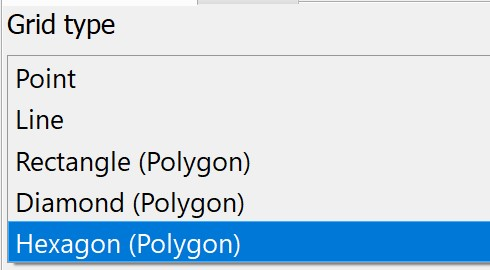
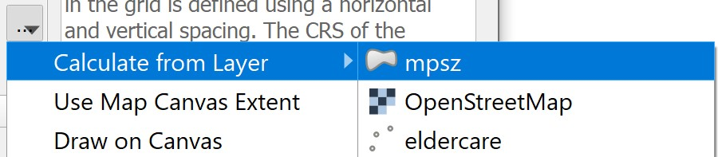
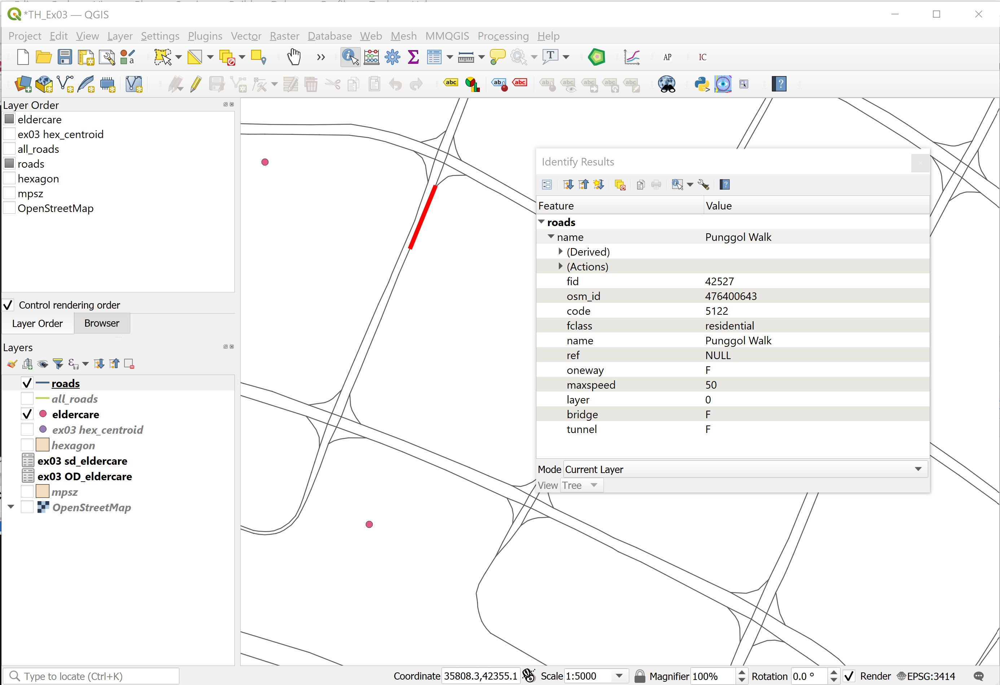
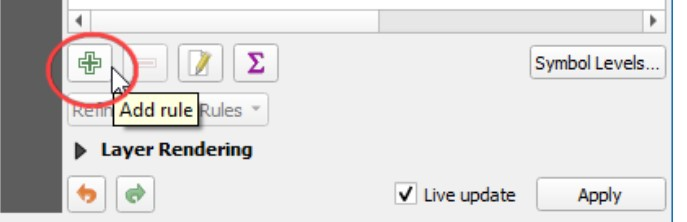
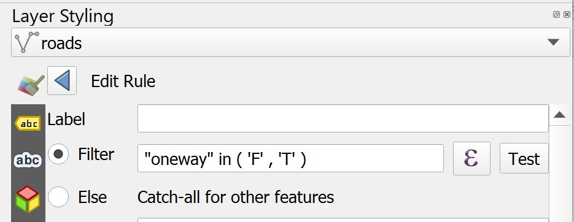
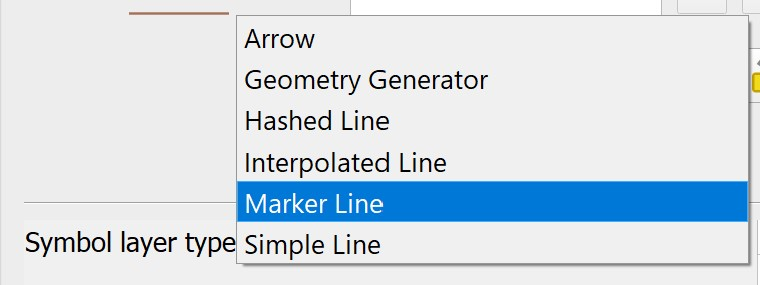
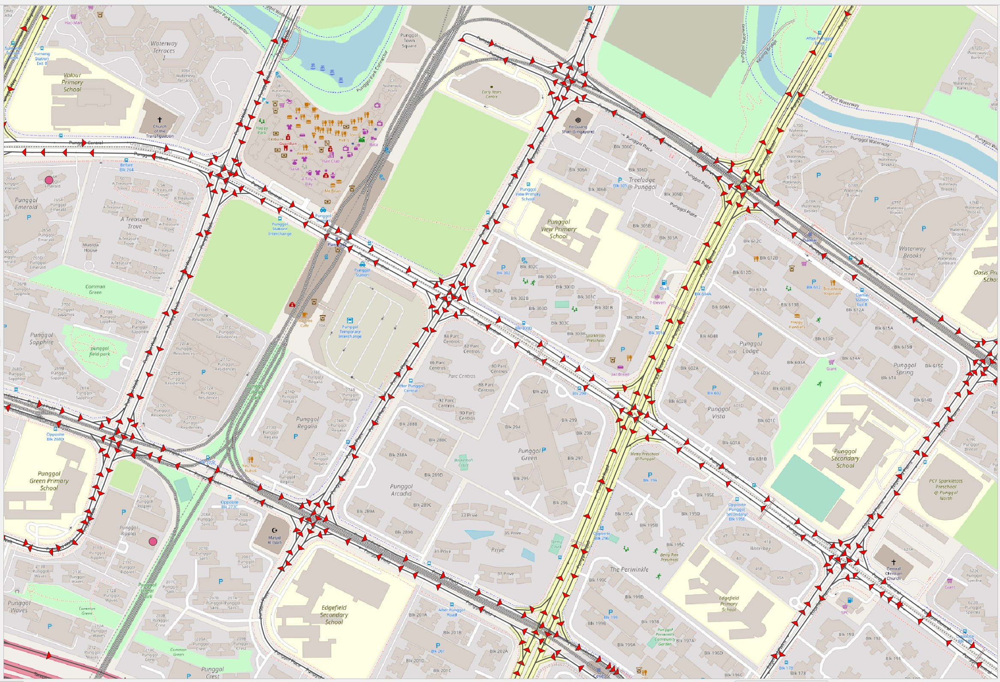
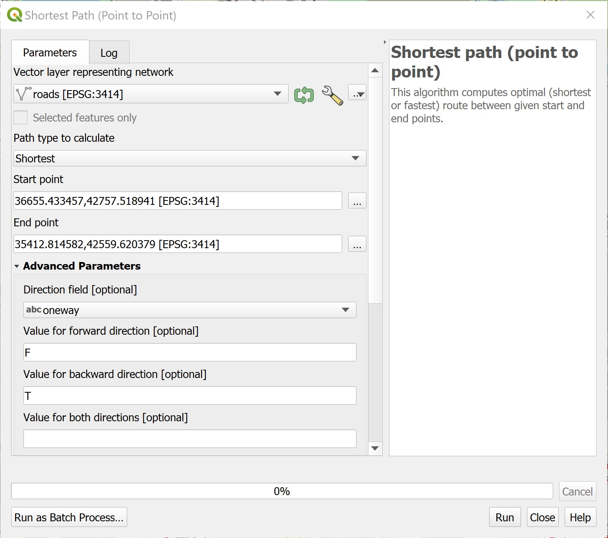
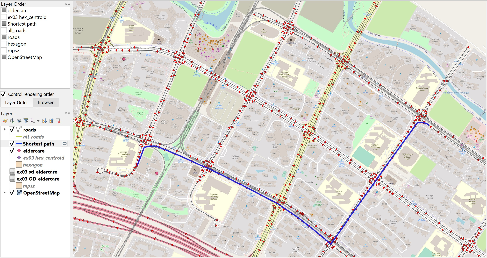

1.0 Introduction
Accessibility is the measure of the capacity of a location to be reached from, or to be reached by, different locations. It is a key element in urban planning and management since it is a direct expression of mobility either in terms of people, freight, or information within a city or between cities.
Well-developed and efficient urban transport systems offer high accessibility levels, while less-developed ones have lower levels of accessibility. Thus, accessibility is linked with an array of economic and social opportunities.
All locations are not equal because some are more accessible than others, which implies inequalities. Thus, accessibility is a proxy for spatial inequalities.
In this hands-on exercise, you will gain hands-on experience on using both build in and plug-in network analysis functions of QGIS to derive accessibility indexes. By the end of this hands-on exercise, you will be able to:
- derive hexagon layer,
- extract, clean and process network data from roads layer of OSM data,
- performing shortest path analysis using QGIS build in network analysis tools, and
- performing network accessibility by using network analysis tools of QNEAT plug-in.
Setting the scene
1.1 The Task
In this hands-on exercise, you are tasked to derive an accessibility to eldercare centre map of Singapore.
1.2 The Data
Three major data sets will be used in this hands-on exercise. They are:
- Master Plan 2014 Subzone Boundary from URA. This data can be downloaded from data.gov.sg.
- Eldercare services from Ministry of Social and Family Development. This data can be downloaded from data.gov.sg. + Roads data from OpenStreetMap (OSM) data sets. OSM data sets can be downloaded from Geofabrik’s free download server.
Note: I recommend this download site instead of bbbike because I found out that the quality of the data provided by Geofabrik is better than bbbike.
2.0 Data Preparation
2.1 Start a new QGIS Project
DIY: Using the steps you had learned in previous hands-on exercise, start a new QGIS project. Save the project and give it a name (i.e. Hands-on_Ex10).
Reminder: Ensure that svy21 projection system is used.
2.2 Preparing base layer for the study area
DIY: Download Master Plan 2014 Subzone Boundary from data.gov.sg and import it into QGIS. Then, save the GIS layer into GeoPackage format. Name the output layer as
mpsz2014.
2.2 Preparing eldercare layer
DIY: Download eldercare services data from data.gov.sg and import it into QGIS (Ideally, the shapefile version should be used). Then, save the GIS layer into GeoPackage format. Name the output layer as
eldercare.
2.3 Extracting and preparing road network layer
2.3.1 Selecting all road network with the study area
DIY: Using appropriate QGIS function(s) you had learned from previous hands-on exercise, clip the road network with Singapore mainland (excluding outer insland, Pulau Tekong and Pulau Ubi). Save the GIS layer into GeoPackage format. Call the layer
all_roads.
2.3.2 Extracting motor vehicle road netowrk
DIY: Using appropriate QGIS function(s) you had learned from previous hands-on Exercise, extract motor vechicle road network (i.e. motorway, motorway_link, primary, primary_link, road, secondary, secondary_link, tertiary, tertiary_link, residential, trunk and trunk_link) from the all_roads layer. Save the GIS layer into GeoPackage format. Name the layer
roads.
Be warn: The original data is in wgs84. For the purpose of network analysis, all network should be in projected coordinates system.
Reminder: Remove all the source data from QGIS project before continue to the next section.
3.0 Analytical Hexagon
In GIS analysis, regularly shaped grids is used for many reasons such as normalizing geography for mapping or to mitigate the issues of using irregularly shaped polygons created arbitrarily (such as county boundaries or block groups that have been created from a political process). Regularly shaped grids can only be comprised of equilateral triangles, squares, or hexagons, as these three polygon shapes are the only three that can tessellate (repeating the same shape over and over again, edge to edge, to cover an area without gaps or overlaps) to create an evenly spaced grid.

Though the square (fishnet) grid is the predominantly used shape type in GIS analysis and thematic mapping, there are ways in which hexagons may be better suited for your analysis based on the nature of your question.
Hexagons reduce sampling bias due to edge effects of the grid shape, this is related to the low perimeter-to-area ratio of the shape of the hexagon. A circle has the lowest ratio but cannot tessellate to form a continuous grid. Hexagons are the most circular-shaped polygon that can tessellate to form an evenly spaced grid.

3.1 Creating hexagon layer
Now, we are going to create a hexagon layer by using mpsz layer as the based. The hexagon distance is 250m.
- From the menu bar, select Vector -> Research Tools -> Create Grids.
Create Grids dialog window appears.
- For Grid type: select Hexagon (Polygon) from the drop down list.

- For Grid extend:, select Calculate from Layer ->
mpsz

- For Horizontal spacing, type 250.
- For Vertical spacing, type 250.
Question: Do you know why 250 is used?
- For Grid CRS, make sure that EPSG 3414 is used.
When you are ready to run the process,
- Click on Run button.
Reminder: Read the Log before closing the dialog window.
- Click on Close button.
Notice that a new temporary layer called Grid is added on the Layer pane and display on Map window.

3.1.2 Editing the hexagon layer
DIY: Using appropriate QGIS functions, edit the temporary
Gridlayer until it looks similar to the screenshot below.

3.1.3 Saving the hexagon layer
DIY: Using the steps you had learned in previous hands-on exercise, save the edited
Gridlayer into GeoPackage format. Give the layer a name (i.e.hexagon)
Before you move on to the next section, remember to remove the temporary Grid layer.
3.2 Computing hexagon centroid
In general, network analysis required the demand in a point feature. Hexagon, on the other hand, is a polygon feature. In order to meet the analysis need, we will compute the centroids of the hexagons.
- From the menu bar, select Vector -> Geometry Tools -> Centroids.
Centroids dialog window appears.
- For Input layer, select hexagon from the drop-down list.
When you are ready to run the process,
- Click on Run button.
Reminder: Read the log before closing.
- Click on Close button.
Notice that a new temporary layer called Centroid is added onto Layers panel and display on Map view.

3.2.1 Saving the centroid layer
DIY: Using the steps you had learned in previous hands-on exercise, save the temporary
Centroidslayer into GepPackage format. Name the newly created layerhex_centroid.
Before you move on to the next section, remember to remove the temporary Centroids layer.
4.0 Shortest Path Analysis
In this section, you will perform the following tasks:
- Identifying useful attribute(s) from the
roadslayer by using QGIS Identify Features tool, - Visualising topological properties of
roadslayer by using styling methods of QGIS, and - Determining shortest path from a demand point (ie. HDB block) to a supply point (i.e. eldercare centre).
4.1 Working with Identify Features tool
In this section, you will explore the attribute information of road layer by using QGIS.
DIY: Zoom to Punggol area as shown in the screenshot below.

Switch off all other layers except
roadsandeldercare.At Layers panel, click on
roadslayer to make it active.From the menu bar, click on Identify Features icon.
Hover the mouse over a road segment and click on it.
The Identify Results dialog window appears.
Your screen should look similar to the screenshot below.

There are many information can be derived from the dialog window. For the time being, let us focus on oneway field. It specifies whether the road segment is two-way or one-way. If it is one-way, the flow direction will be given.
There are three different values. B for two-way. F means that only driving in direction of the line string is allowed. T means that only the opposite direction is allowed.
- Close the Identify Results dialog window.
4.2 Working with QGIS’s Styling methods
Now, we will use the information in oneway field to display an arrow on one-way streets
- From the Layers panel, click on Open the Layer Styling Panel button.
The Layer Styling panel appears on the right as shown below.

- Select Rule-based from the drop-down menu.

We will create a new style with a filter for only the one-way roads.
- Click on the Add rule + button.

- From the Edit rule dialog, click on Expression button.

The Expression String Builder dialog window appears.
We are going to build an expression that select all one-way streets.
- Click on the black triangle in front of Fields and Values to expand the section.

Double-click on
onewayfield.Click on = button.
At the Expression pane, complete the expression as shown below.

- Click on Ok button.
Notice that Filter option has been updated.

Next, we are going to change the Symbol layer type to Market line.

Notice that the road lines are marked with red markers now.

- At the Marker placement pane, click on the radio button in front of
on center point.
Notice that the markers are placed at the centre of each line segment.

- At the Symbol pane, click on
Simple marker.

- Scroll down and select filled_arrowhead marker.

Notice that arrow-like symbol now appears on the one-way streets as shown below.

You can close Layer Styling dialog window now.
- At the Layer Styling panel, click on the cross located at the upper right of the panel.
4.3 Working with build in shortest path tool
Now, we are going to determine the shortest path from Block 619B to eldercare centre located at Block 211B (lower left corner of the view window)
From the menu bar, click on Processing -> Toolbar.
At the Toolbox search pane, type Shortest path.
Your screen should look similar to the screenshot below.

- Double-click on Shortest path (point to point) of Network analysis.
Shortest Path (Point to Point) dialog window appears.
For Vector layer representing network, select
roadsfrom the drop-down list.For Path type to calculate, select Shortest from the drop-down list.
For Start point, manually click on the Block 619B.
For End point, manually click on Block 211B.
For Direction field [optional], select
onewayfrom the drop-down list.For Value for forward direction [optional], type F.
For Value for backward direction [optional], type T.
The Shortest Path (Point to Point) dialog window looks similar to the screenshot below.

We will keep the rest of the selection as default for the time being.
When you are ready,
- click on Run button.
Reminder: Read the log before closing the dialog window.
- Click on the Close button to close the dialog window.
Notice that a temporary layer called Shortest Path is added on Layers panel and is display on the map view.
The default line thickness of Shortest Path is too thin to view.
DIY: Using the steps you had learned in previous hands-on exercise, increase the thickness of the line symbol.
You screen should look similar to the screenshot below.

DIY: Using the steps you had learned from previous hands-on exercise, save the temporary Shortest Path layer into GeoPackage format. Name the layer
Shortest_pathand add it onto the map view.
DIY: Remove the temparory layer from the Layers panel.